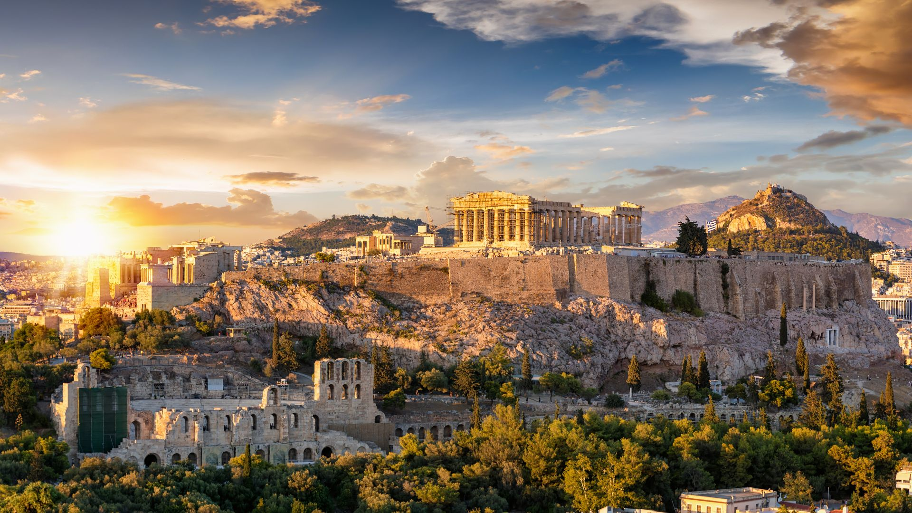

Pagina web realizata de Zalog Iustin pentru lucrarea de atestat
Motivarea și scopul alegerii temei
La data de 1 ianuarie 2007, Romania devine membra a Uniunii
Europene. Calitatea de stat membru ne ofera atat drepturi cat si
obligatii, ca in cazul oricarui alt stat membru. In ciuda acestei
uniunii a 27 de tari, toate au reusit sa isi pastreze
individualitatea si unicitatea de-a lungul aniilor. Asta ofera
Europeii o diversitate culturala vasta, iar asta aduce frumusete
si bogatie continentului. Multe monumente si cladiri istorice
dateaza de pe vremea Romei Antice, Greciei Antice, Daciei, a
celtilor si germanicilor. Cea mai veche civilizatie din Europa a
fost pe teritoriul Romaniei, fiind stramosii dacilor, si a fost
denumita “Cucuteni”. Am ales aceasta tema pentru a valorifica
cateva dintre cele mai frumoase orase, in ochii mei, din Europa.
Roma
Roma este capitala Italiei. Situat pe malul fluviului Tibru,
orașul are o istorie îndelungată, fiind de-a lungul secolelor
capitala Republicii Romane, a Imperiului Roman, a Bisericii
Romano-Catolice și a Italiei moderne. Roma are o populație de
2.745.819 persoane. Aria metropolitană are o populație de
4.355.725 milioane de locuitori. Este capitala regiunii Lazio și
a Provinciei Roma. Roma este un important centru turistic.
Printre monumentele cele mai faimoase se numără Colosseumul și
Columna lui Traian. O enclavă a Romei este și statul Vatican, un
teritoriu suveran al Sfântului Scaun situat într-un cartier
roman. Este cel mai mic stat din lume, și capitala singurei
religii care are reprezentanță în Națiunile Unite (ca un stat
observator non-membru).
Roma este capitala Italiei și a regiunii Lazio. Întinzându-se pe o
suprafață de 1285 km², orașul are peste 2,7 milioane locuitori și
o istorie străveche. După legendă, Roma a fost întemeiată de
Romulus și Remus la data de 21 aprilie 753 î.Hr. Roma este un
oraș fascinant, a cărui frumusețe și bogăție artistică te
copleșesc. A fost numită și città eterna (“orașul etern” sau
“cetatea eternă”) sau “orașul celor șapte coline”. Plină de piețe
frumoase, muzee, monumente, străzi și colțuri încântătoare, Roma
este orașul de care nu te vei plictisi niciodată.
Atracții turistice: 1. Colosseumul este probabil cea mai
impresionantă clădire-ruină a Imperiului Roman și un obiectiv
foarte vizitat de turiștii din întreaga lume. Colosseumul din Roma
impresionează prin dimensiunile sale: are o formă eliptică cu 189
metri lungime, 156 metri lățime și aproape 50 de metri
înălțime. În vremurile vechi, acest amfiteatru era utilizat
ca arenă pentru gladiatori și pentru alte evenimente publice sau
spectacole de teatru și diverse expediții de vânătoare. 2.
Piața Veneția și monumentul Il Vittoriano se află
în vecinătatea Dealului Capitol și a Forumului Roman și este un
loc care abundă de monumente celebre, însă monumentul lui Victor
Emanuel al II-lea este de departe cel mai remarcabil. Il
Vittoriano, numit și Altarul Patriei este un complex monumental
național cu o mare valoare simbolică și reprezentativă. Acesta
impresionează prin dimensiuni, având o lățime de 135 de metri și
70 m înălțime și este alcătuit din zeci de coloane corintice
maiestuoase și scări sculptate în marmura albă. În interiorul
monumentului se găsesc săli mari, folosite pentru expoziții. Tot
aici se află și Museo centrale del Risorgimento, un muzeu dedicate
istoriei unificării Italiei. 3.
Fontana di Trevi este cea mai cunoscută și
probabil cea mai frumoasă fântână arteziană din Roma. Fântâna
este construită în cea mai mare parte din piatră de travertin și
are o înălțime de aproximativ 26 de metri și lățime de 20 de
metri. Apa de pe fundul fântânii reprezintă marea. Legenda spune
că cel ce aruncă o monedă în apă se va întoarce la Roma. Această
monedă trebuie aruncată peste umăr, cu spatele la fântână.
Lyon
Lyon este un oraș în Franța situat la confluența fluviului Rhône
cu râul Saône, la 460 km spre sud-est de Paris și la 314 km spre
nord de Marsilia. Este capitala departamentului Rhône și a
regiunii Auvergne-Ron-Alpi. Este al treilea oraș ca mărime din
Franța. Istoria Lyonului, începe în perioada romanilor în
primul secol înainte de Hristos. Romanii au întemeiat așezarea
numită Lugdunum (cetatea luminoasă după unii, iar după alții
cetatea lui Lug). Timp de trei secole așezarea a servit ca
centru al celor trei Galii, din punct de vedere politic,
economic, militar și religios. După o vreme Lyonul cunoaște o
perioadă decandentă, biserica fiind cea care i-a oferit ocazia
de a renaște începând cu secolul al XI-lea, ca Primat al
Galilor. Prosperitatea sa nu a încetat să se amplifice atingând
apogeul în timpul Renașterii. De la finele secolului al XV-lea,
apar marile târguri, apar bănci locale care îi atrag pe
comercianții din întreaga Europă. Apoi elita intelectuală și
artistică se instalează la Lyon.
Geografia Lyonului este marcată de confluența Ronului (Rhône) și
Sonei (Saône) în partea sudică a centrului istoric, formând un fel
de peninsulă sau „presqu'île”; două mari coline, una la vest și
una la nord față de centrul istoric al orașului și o câmpie plană
la est de malul Rhonului. La vest este colina Fourvière, unde este
ridicată catedrala Notre-Dame de Fourvière, palatul episcopal,
turnul metalic (un turn TV ce imită ultimul tronson al Turnului
Eiffel și un funicular). Istoria Lyonului începe în perioada
romanilor în primul secol înainte de Hristos. Romanii au întemeiat
așezarea numită Lugdunum (cetatea luminoasă după unii, iar după
alții cetatea lui Lug). Timp de trei secole așezarea a servit ca
centru al celor trei Galii, din punct de vedere politic, economic,
militar și religios. După o vreme Lyonul cunoaște o perioadă
decandentă, biserica fiind cea care i-a oferit ocazia de a renaște
începând cu secolul al XI-lea, ca Primat al Galilor. Prosperitatea
sa nu a încetat să se amplifice atingând apogeul în timpul
Renașterii. De la finele secolului al XV-lea, apar marile târguri,
apar bănci locale care îi atrag pe comercianții din întreaga
Europă. Apoi elita intelectuală și artistică se instalează la
Lyon.
Atracții turistice: 1.
Râurilor Rhône și Saône – La Lyon, care este cel
mai mare oraș de-a lungul întregului său curs, Rhône-ul întâlnește
cel mai important afluent al său: Saône-ul. Pe marginea
Rhône-ului, în zona de promenadă unde tinerii se adună în fiecare
seară. 2. Halele Paul Bocuse – Pentru că
Lyon este, în primul rând, o destinație gastronomică, unul dintre
punctele de atracție ale orașului o reprezintă Halele Paul Bocuse,
un loc imens și emblematic al orașului, de unde poți cumpăra și
mânca delicatese ale bucătăriei franțuzești și internaționale.
Fois gras, brânzeturi care mai de care, fructe de mare, mezeluri,
macarons și alte deserturi în toate culorile sunt doar câteva
dintre ofertele comercianților și restaurantelor din Halele Paul
Bocuse. La ora prânzului, locul devine foarte animat pentru că
oameni ai locului și turiști "năvălesc" în diversele restaurante
pentru a experimenta delicatesele din meniu. 3.
Musée des Confluences – Lyon este un oraș de
interes cultural cu multă istorie, artă, literatură, de aceea
muzeele sunt un bun punct de plecare pentru a descoperi orașul.
Printre cele mai interesante muzee ale Lyonului se numără Musée
des Beaux Arts, Musée Gadagne, Musée D'art Contemporain, Musée
Africain de Lyon sau Musée des Confluences. Pentru că am avut doar
două zile de stat în Lyon și am vrut mai mult să experimentez
forfota orașului, am ales să merg doar la Musée des Confluences,
situat la confluența râurilor Rhône și Saône. Deschis în decembrie
2014, Musée des Confluences spune povestea omenirii și a istoriei
vieții. Circuitul expozițional permanent începe cu marile
întrebări universale și apoi continuă să exploreze originea și
destinul umanității, diversitatea culturilor și civilizațiilor și,
de asemenea, locul oamenilor în rețeaua vieții. Cu peste două
milioane de obiecte în colecțiile sale, muzeul ilustrează, prin
expozițiile și organizarea sa, poveștile care stau la baza
umanității noastre pe fiecare continent și în mai multe societăți.
Madrid
Madrid este capitala Spaniei. Construit pe ruinele unui fort
maur numit Magerit, orașul a devenit capitală în 1561, în timpul
domniei lui Filip al II-lea de Habsburg. Ca urmare Madrid a
devenit un oraș înfloritor. Puncte importante culturale și
turistice includ faimosul Muzeu Prado, Muzeul Thyssen
Bornemisza, Centrul de Artă Regina Sofia (unde se află Guernica
lui Pablo Picasso), Casón del Buen Retiro, Palatul Regal, Templo
de Debod, Monasterio de las Descalzas Reales, Puerta del Sol,
Parque de Retiro, și Chueca.
Madrid este cunoscut și pentru viața sa de noapte și discotecile
sale; pentru madrileni nu este ieșit din comun să danseze toată
noaptea, iar apoi dimineața să meargă la muncă. Această viață de
noapte numită la movida, a înflorit după moartea lui Franco. În
centrul Madridului, în Plaza de Castilla, se află 4 zgârie-nori cu
înălțimi cuprinse între 236 și 250 metri. Cucerirea,
colonizarea și pacificarea peninsulei Iberice, realizate de
Imperiul Roman, au durat aproape 200 de ani, de la al doilea
război punic până în 27 î.Hr., când a avut loc pacificarea
nordului peninsulei, și organizarea lui în trei provincii.
Regiunea din care face parte Madridul de astăzi corespunde cu
Tarraconensis. Capitala spaniolă, excluzând suburbiile
moderne, are aproximativ forma unui patrulater alungit pe direcția
nord-sud. Dezvoltarea modernă a orașului începe în secolul al
XVIII-lea, sub Bourboni, care au întreprins amenajarea capitalei
și construcția Palatului Regal. Astăzi, orașul se întinde
spre vest, dincolo de râul Manzanares (traversat de 11 poduri,
dintre care principale sunt Puente de Toledo și Puente de
Segovia), de-a lungul drumurilor Paseo de Extremadura și Calle de
Toledo, iar spre nord se dezvoltă noile cartiere Ciudad Lineal,
formate mai ales din vile și cu numeroase spații verzi. Metropola
spaniolă se remarcă printr-un mare număr de parcuri, largi
bulevarde, monumente și fântâni. Cel mai mare parc al capitalei,
situat pe malul drept al râului Manzanares, este Casa de Campo, de
fapt o pădure-parc, care acoperă aproape 1750 ha, în cuprinsul
căruia sunt amenajate trei lacuri. Alte parcuri: Retiro, Campo del
Moro și Parc del Oeste.
Atracții turistice: 1. Parcul Rio – Un vast parc public de-a
lungul râului Manzanares, parcul Madrid Rio este un spațiu verde
frumos, cu o floră și o faună variate. Este un loc de întâlnire
popular pentru locuitorii orașului, în special pentru familii,
datorită celor 17 zone de joacă din parc. 2.
Puerta de Alcala – Poate una dintre cele mai
celebre structuri din Madrid, spectaculoasa Puerta de Alcala
datează de la sfârșitul secolului al XVIII-lea. Structura este
chiar mai veche decât Arcul de Triumf din Paris. Fiecare dintre
cele cinci arcuri ale Puerta de Alcala are un design unic. Cele
trei arcuri rotunjite sunt, de asemenea, decorate cu un cap de
leu. 3. Museo Arqueologico Nacional – Dacă e
vreun muzeu pe care să îl vizitezi în Madrid, acela trebuie să fie
Museo Arqueologico Nacional — Muzeul Arheologic Național. Vei găsi
aici o colecție cuprinzătoare de artefacte, artă și colecții care
explorează viața în Mediterana din istoria antică până în secolul
al XIX-lea.
Atena
Atena (în greaca modernă Αθήνα, Athina [singular], în greaca
clasică Ἀθῆναι, Athēnai [plural]) este capitala Greciei. Atena a
cunoscut o evoluție glorioasă, mai ales în Grecia Antică, fiind
locuită de oameni încă din Epoca Bronzului și guvernată până în
jurul anului 1000 î.Hr. de regi ionieni. Cea mai veche
prezență umană în Atena este atestată la peștera Schist, datată
a fi în preajma mileniilor al IX-lea–al VII-lea î.e.n. Atena
este locuită permanent de cel puțin 7000 de ani. Atena avea
în anul 2001 o populație de 745,514 locuitori la o suprafață de
39 km². Aria metropolitană are o suprafață de 412 km², iar
numărul locuitorilor în 2001 era de 3,130,840. Zona
metropolitană a Atenei era a XII-a în Uniunea Europeană, conform
Eurostat.

Capitala Greciei este denumită după zeița Atena (greacă din
Attica: Ἀθηνᾶ; greacă homerică: Ἀθηναίη), numită și Pallas Atena.
Aceasta este o zeiță din mitologia greacă, asociată cu
înțelepciunea, artizanatul și războiul, care a fost ulterior
sincretizată cu zeița romană Minerva. Atena a fost considerată
patronul și ocrotitoarea diferitelor orașe din Grecia, în special
orașul Atena, de unde cel mai probabil și-a primit numele.
Partenonul de pe Acropola Atenei îi este dedicat. Simbolurile ei
majore includ bufnița, măslinul, șarpele și amuleta cu gorgonă. În
artă, ea este în general reprezentată purtând o cască și ținând o
suliță. Atena clasică a fost un puternic oraș-stat a cărui
apariție a avut legătură cu dezvoltarea portului maritim Pireu.
Centrul al artelor, studiului și filozofiei, casa Academiei lui
Platon și a Liceului lui Aristotel, este numită adesea leagănul
civilizației occidentale și loc de naștere al democrației, în mare
parte din cauza impactului său cultural și politic asupra
continentului european și, de asemenea, asupra romanilor. În
timpurile contemporane, Atena este o mare metropolă cosmopolită și
centru al vieții economice, financiare, industriale, maritime,
politice și culturale din Grecia. Cea mai veche prezență
umană în Atena este atestată la peștera Schist, datată a fi în
preajma mileniilor al IX-lea–al VII-lea î.e.n. Atena este locuită
permanent de cel puțin 7000 de ani. Atena avea în anul 2001 o
populație de 745,514 locuitori la o suprafață de 39 km². Aria
metropolitană are o suprafață de 412 km², iar numărul locuitorilor
în 2001 era de 3,130,840. Zona metropolitană a Atenei era a XII-a
în Uniunea Europeană, conform Eurostat. Numărul locuitorilor din
Atena este mai ridicat datorită numeroșilor emigranți care provin
din țări ca Albania, România, Republica Moldova, Pakistan și unele
țări africane dar și din alte țări. Expansiunea Atenei, începută
în anii 1950 - 1970, continuă și în prezent, iar capitala a
înghițit multe localități din nord și est. Se mai poate spune ca
în antichitate orașul port Pireu nu făcea parte din Atena.
Atracții turistice: 1. Templul lui Zeus Olimpianul – Este unul
dintre cele mai mari și mai impresionante temple din lumea antică
și are o istorie de peste 2000 de ani. Astăzi, puteți vedea 8
dintre cele 104 coloane originale ale templului, dar și impozanta
statuie a lui Zeus, care cântărește aproximativ 13 tone. 2.
Muzeul Benaki – Acest muzeu de artă găzduiește o
impresionantă colecție de obiecte și artefacte din Grecia antică
și până în prezent. Clădirea în sine este o capodoperă de artă
neoclasică, fiind construită în anul 1800. Colecția permanentă
prezintă obiecte de artă bizantină și postbizantină, artă populară
și artă decorativă grecească, iar cea mai importantă secțiune
include artefacte din Grecia Antică: statui, vase, bijuterii, dar
și alte obiecte din diferite perioade antice. Muzeul Benaki este
cunoscut și pentru frumoasele activități culturale care au loc
aici. 3. Piața Monastiraki – Este una dintre
cele mai aglomerate și animate piețe din Atena, fiind populară
pentru magazinele sale cu suveniruri, obiecte de artă și haine.
Este locul ideal pentru a experimenta viața de zi cu zi a
Atenei. 4. Plaka – Acest cartier pitoresc
din centrul Atenei, cu străzi înguste și cafenele și taverne
tradiționale grecești este o adevărată încântare pentru ochi. În
timpuri străvechi a jucat un rol important în istoria orașului
Atena, de aici și numeroasele clădiri istorice, dar și unele
dintre cele mai vechi biserici din Atena. Pe lângă moștenirea sa
istorică, în acest loc animat veți putea să experimentați cultura
și gastronomia grecească. Cartierul Plaka este, de asemenea, un
loc excelent pentru a cumpăra suveniruri și obiecte de artă
tradiționale.
Timisoara
Timișoara este municipiul de reședință al județului Timiș,
Banat, România. Se află în vestul României, aproape de
frontierele cu Ungaria și Serbia, pe malul râului Bega. La
recensământul din 2011 avea 319.279 de locuitori și era al
treilea oraș ca populație din România, fiind printre puținele
orașe care au înregistrat o creștere de la cifra înregistrată la
recensământul din 2002. Zona metropolitană Timișoara cuprinde 27
de localități, are o suprafață de 2.439,19 km², și o populație
de 468.162 de locuitori. Clădiri emblematice pentru oraș
sunt Catedrala Mitropolitană Ortodoxă și Palatul Culturii din
Piața Victoriei, respectiv Domul Romano-Catolic, Vicariatul
Sârbesc și Palatul Baroc din Piața Unirii. Printre obiectivele
turistice se numără Castelul Huniade, Bastionul Theresia, Muzeul
de Artă și Muzeul Satului Bănățean.
Numele localității provine de la cel al râului Timiș, combinat cu
substantivul maghiar vár, „cetate", adică Cetatea Timișului.
Situat pe râul Bega, Timișoara este cel mai mare și important oraș
al regiunii istorice Banat. Din 1848 și până în 1860 a fost
capitala Voivodinei Sârbești și Banatului Timișan. După Primul
Război Mondial Timișoara a intrat în componența României. În anul
1989, orașul a fost focarul Revoluției Române, care a îndepărtat
de la guvernare regimul comunist.
Atracții turistice: 1. Piața Unirii – Piața Unirii este cea
mai veche piață istorică din Timișoara, amenajată în stil baroc.
Este cunoscută și cu numele de "Piața Domului", datorită Domului
Romano-Catolic, o construcție barocă reprezentativă a orașului și
una dintre cele mai valoroase existente în regiunea Banat. 2.
Piața Victoriei – La polii opuși ai pieței se
găsesc la nord Opera, iar la sud Catedrala Mitropolitană. Ambele
construcții au ansambluri arhitecturale protejate, de importanță
istorică locală. În jurul pieței se găsesc instituții culturale -
Opera Română, Teatrul Național, Teatrul Maghiar de Stat, Teatrul
German de Stat, Catedrala Mitropolitană, cinematografele Timiș,
Capitol și Studio, Muzeul Banatului, galerii de artă și multe
magazine. 3. Castelul Huniade – De-a lungul
timpului, castelul a fost, în repetate rânduri, distrus şi apoi
refăcut. Faţada îşi păstrează aspectul actual din anul 1856.
Turnul castelului este de forma rectangulară, este de înălţime
redusă, cu ferestre mici şi terminat cu creneluri. Până la
sfârşitul celui de-al doilea război mondial, fostul castel regal a
funcţionat ca şi cazarmă. După aceea, clădirea medievală a devenit
Muzeul Banatului, destinaţie păstrată până astăzi, găzduind
secțiile de istorie și de științele naturii.
Zagreb
Zagreb este capitala Croației. Populația orașului este 792000 de
locuitori (1.100.000 în zona metropolitană). Este situat pe
versantul muntelui Medvednica și pe malul râului Sava, la o
altitudine de 120 m. Amplasarea favorabilă din punct de vedere
geografic în partea de sud-vest a bazinului panonic, care se
extinde spre regiunile alpină, dinarică, adriatică și panonică,
oferă cea mai bună legătură de trafic între Europa centrală și
Marea Adriatică. Orașul este atestat documentar din anul
1094, într-o diplomă prin care regele Ladislau I al Ungariei a
înființat Dieceza de Zagreb. Între episcopii de Zagreb s-au
numărat mai mulți clerici transilvăneni, precum Tamás Bakócz și
Nicolaus Olahus. Umanistul Andrea Scolari a fost mai întâi
episcop de Zagreb, iar apoi episcop de Oradea Mare.
Orașul este atestat documentar din anul 1094, într-o diplomă prin
care regele Ladislau I al Ungariei a înființat Dieceza de Zagreb.
Între episcopii de Zagreb s-au numărat mai mulți clerici
transilvăneni, precum Tamás Bakócz și Nicolaus Olahus. Umanistul
Andrea Scolari a fost mai întâi episcop de Zagreb, iar apoi
episcop de Oradea Mare. În Zagreb este centrul industriei
metalurgice croate. În oraș este prezentă de asemenea industria
textilă, industria chimică, farmaceutică, tipografică și de
pielărie, prelucrarea lemnului, industria hârtiei etc.
Atracții turistice: 1. Catedrala Neo-Gotică – Se distinge în
special datorită celor două turle gemene, construite în stil
neo-gotic, vizibile practic din orice zonă a orașului. Din
nefericire, este aproape permanent în proces de renovare, în mare
măsură din cauza istoriei sale zbuciumate. Întemeiată în 1093,
abia în 1242 i-a fost finalizată construcția inițială în stil
romanic. Următorii 21 de ani au fost destul de nefasti pentru
edificiu, puternic afectat de asediile repetate ale tatarilor. În
1624, o serie de incendii devastatoare au distrus biserica aproape
complet, pentru ca, în 1645, o ultima răbufnire a flăcărilor să
dărâme tot ce mai rămăsese în picioare. Reconstruită cu mare
greutate, a fost avariată grav de cutremurul din 1880. Au urmat 12
ani de restaurare, ocazie cu care au fost înălțate frumoasele sale
turnuri neo-gotice. În 1990 au debutat lucrările de refacere a
exteriorului catedralei, încă în curs de desfășurare. Din vechile
construcții se mai păstrează frescele din secolul al XIII-lea,
stranele renascentiste, altarele din marmură și un amvon în stil
baroc. 2. Piața Ban Jelacica – Piața
principală a orașului, piața Ban Josip Jelacic, numită așa după un
conte croat, din secolul al XIX-lea. Cândva piața de mărfuri, acum
ea este locul de întâlnire al tinerilor, dar și al celor mai în
vârstă și loc de desfășurare a unor manifestări culturale și
sportive, dintre care cea mai importantă este Festivalul
Internațional de Folclor, care are loc în fiecare vară. 3.
Grădina Botanică – Grădina Botanică, fondată de
Antun Heinz în 1890, este realizată într-o combinație de parc
englezesc, sălbatic în aparență, și stilul geometric perfect al
grădinilor franceze. În plus, parcul natural a fost invadat în
timp de tot soiul de broaște testoase, porumbei și familii întregi
de rațe. Pentru odihnă, la dispoziția vizitatorilor sunt puse mai
multe rânduri de bănci. 4. Muzeul Mimara –
Obiectele, câteva mii la număr, au fost donate municipalității de
către Ante Topic Mimara, un colecționar particular originar din
Zagreb. În prezent, în galeriile muzeului sunt expuse 3.750 de
opere de artă, printre care se numără lucrări semnate de Raphael,
Rembrandt, Rubens, Van Gogh și Da Vinci. Tot aici poate fi
admirată o impresionantă colecție de artefacte aparținând
civilizațiilor străvechi, cum ar fi Egiptul, Grecia, Mesopotamia
sau Roma antică.